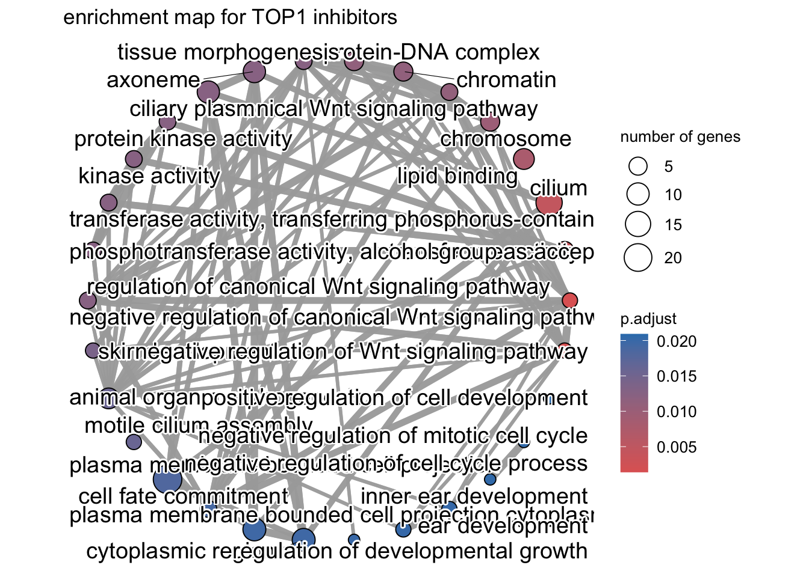
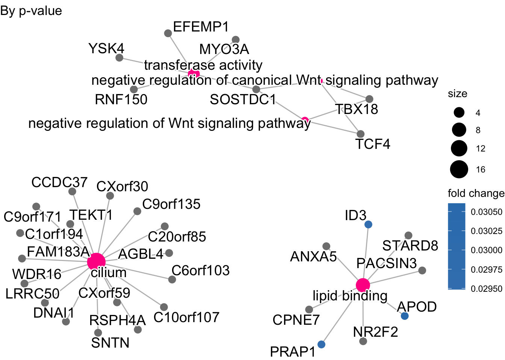
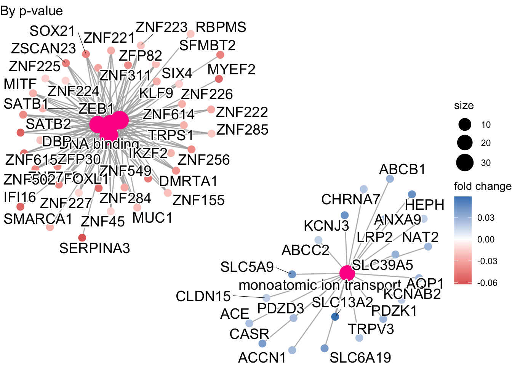
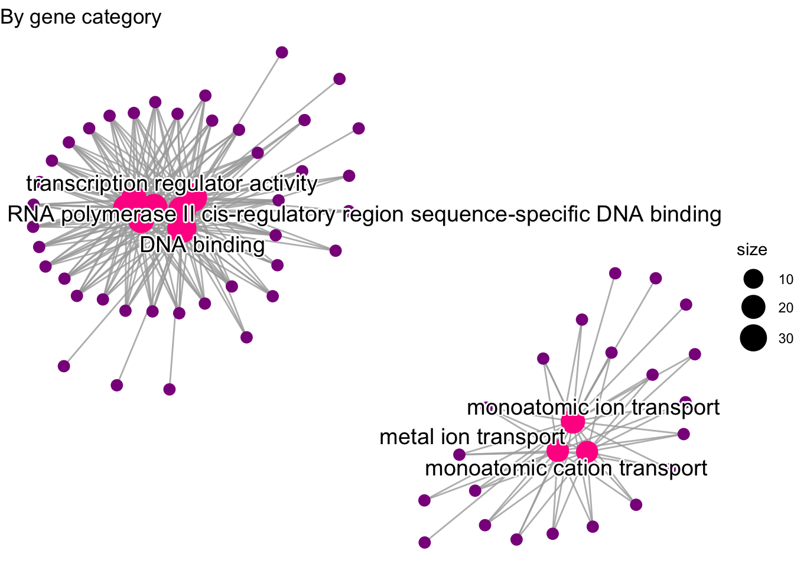

Gene Set Analysis
2024-07-22
Last updated: 2024-07-24
Checks: 6 1
Knit directory: drug-AUC-analysis/
This reproducible R Markdown analysis was created with workflowr (version 1.7.1). The Checks tab describes the reproducibility checks that were applied when the results were created. The Past versions tab lists the development history.
The R Markdown file has unstaged changes. To know which version of
the R Markdown file created these results, you’ll want to first commit
it to the Git repo. If you’re still working on the analysis, you can
ignore this warning. When you’re finished, you can run
wflow_publish to commit the R Markdown file and build the
HTML.
Great job! The global environment was empty. Objects defined in the global environment can affect the analysis in your R Markdown file in unknown ways. For reproduciblity it’s best to always run the code in an empty environment.
The command set.seed(20240628) was run prior to running
the code in the R Markdown file. Setting a seed ensures that any results
that rely on randomness, e.g. subsampling or permutations, are
reproducible.
Great job! Recording the operating system, R version, and package versions is critical for reproducibility.
Nice! There were no cached chunks for this analysis, so you can be confident that you successfully produced the results during this run.
Great job! Using relative paths to the files within your workflowr project makes it easier to run your code on other machines.
Great! You are using Git for version control. Tracking code development and connecting the code version to the results is critical for reproducibility.
The results in this page were generated with repository version 73fb4f5. See the Past versions tab to see a history of the changes made to the R Markdown and HTML files.
Note that you need to be careful to ensure that all relevant files for
the analysis have been committed to Git prior to generating the results
(you can use wflow_publish or
wflow_git_commit). workflowr only checks the R Markdown
file, but you know if there are other scripts or data files that it
depends on. Below is the status of the Git repository when the results
were generated:
Ignored files:
Ignored: .DS_Store
Ignored: .Rhistory
Ignored: .Rproj.user/
Unstaged changes:
Modified: analysis/gene_set_analysis.Rmd
Note that any generated files, e.g. HTML, png, CSS, etc., are not included in this status report because it is ok for generated content to have uncommitted changes.
These are the previous versions of the repository in which changes were
made to the R Markdown (analysis/gene_set_analysis.Rmd) and
HTML (docs/gene_set_analysis.html) files. If you’ve
configured a remote Git repository (see ?wflow_git_remote),
click on the hyperlinks in the table below to view the files as they
were in that past version.
| File | Version | Author | Date | Message |
|---|---|---|---|---|
| Rmd | 73fb4f5 | kitadalvi | 2024-07-24 | added GSEA |
| html | 73fb4f5 | kitadalvi | 2024-07-24 | added GSEA |
Overview/Notes
Plots used for analysis: • Dot plot:number of genes belonging to each GO-term and associated adjusted p-values
• Enrichment map: Shows overlap between genes in different GO terms
• Category Net plot:Linkages of genes and biological concepts as a network
• Ridge Plot: Density pltos of expression for different gene sets to determine up/downregulated pathways
Analysis of significantly correlated genes across TOP1 inhibitors
Significant genes
#loading in data
top1_sig_genes <- read.delim('/Users/dalvinikita/Documents/Drug Response Analysis/top1_drugs_genes.txt', header=T)
head(top1_sig_genes) genes logFC logCPM LR PValue FDR
1 ZFPM2 0.3087779 1.8306206 93.88924 3.336836e-22 5.409345e-18
2 IGFL2 -0.1536392 1.3589416 84.83488 3.243520e-20 2.629035e-16
3 AL157931.2 0.3432817 5.6722277 64.93880 7.726072e-16 4.174912e-12
4 AC022596.1 0.1622893 1.3221242 54.86168 1.293179e-13 5.240931e-10
5 NUS1P2 0.3051329 5.2650851 51.62835 6.706618e-13 2.133393e-09
6 PALMD 0.2111364 0.3114543 51.30781 7.896094e-13 2.133393e-09Preparing input
gene_list <- top1_sig_genes$logFC
names(gene_list)<- top1_sig_genes$genes
gene_list=sort(gene_list, decreasing = TRUE)
top1_gse <- gseGO(geneList=gene_list,
ont ="ALL",
keyType = "ALIAS",
minGSSize = 3,
maxGSSize = 800,
pvalueCutoff = 0.05,
verbose = TRUE,
OrgDb = org.Hs.eg.db,
pAdjustMethod = "none")DotPlot
require(DOSE)
dotplot(top1_gse, showCategory=8,split=".sign",label_format=50,color='p.adjust')+
facet_grid(.~.sign) +
theme_dose(font.size = 5)+
ggtitle("dotplot for TOP1 inhibitors")
| Version | Author | Date |
|---|---|---|
| 73fb4f5 | kitadalvi | 2024-07-24 |
Enrichment Map
x<- pairwise_termsim(top1_gse)
emapplot(x,layout.params=list(layout='circle'))+
ggtitle("enrichment map for TOP1 inhibitors")
| Version | Author | Date |
|---|---|---|
| 73fb4f5 | kitadalvi | 2024-07-24 |
Category Netplot
cnetplot(top1_gse, categorySize="pvalue", color.params=list(foldChange=gene_list,category='deeppink1'))+
ggtitle("By p-value")
| Version | Author | Date |
|---|---|---|
| 73fb4f5 | kitadalvi | 2024-07-24 |
cnetplot(top1_gse, node_label="all", color.params=list(category='deeppink1', gene='darkmagenta'), showCategory=10)+
ggtitle("By both gene category and name")
cnetplot(top1_gse, node_label="category", showCategory=10, color.params=list(category='deeppink1', gene='darkmagenta'))+
ggtitle("By gene category")cnetplot(top1_gse, node_label="gene", color.params=list(category='deeppink1', gene='darkmagenta'), showCategory=10)+
ggtitle("By gene name")### Ridgeplot
ridgeplot(top1_gse, showCategory = 15, label_format =50 )+theme_dose(font.size = 5)+
ggtitle("ridgeplot for TOP1 inhibitors")
| Version | Author | Date |
|---|---|---|
| 73fb4f5 | kitadalvi | 2024-07-24 |
Analysis of significantly correlated genes across platinum compounds
Significant genes
#loading in data
plat_sig_genes <- read.delim('/Users/dalvinikita/Documents/Drug Response Analysis/plat_drugs_genes.txt', header=T)
head(plat_sig_genes) genes logFC logCPM LR PValue FDR
1 CCDC43 0.02505341 5.762231 191.66636 1.375972e-43 2.230589e-39
2 GPATCH8 0.02323835 8.024142 171.65390 3.220680e-39 2.610522e-35
3 ACLY 0.02568084 10.161320 131.18368 2.257231e-30 1.219732e-26
4 RASL11A 0.03333610 3.321720 120.21007 5.690421e-28 2.306185e-24
5 C5orf17 0.04955097 2.232800 97.14530 6.442195e-23 2.088688e-19
6 EFTUD2 0.01855204 7.721094 85.32133 2.536121e-20 6.852175e-17Preparing input
gene_list <- plat_sig_genes$logFC
names(gene_list)<- plat_sig_genes$genes
gene_list=sort(gene_list, decreasing = TRUE)
gse <- gseGO(geneList=gene_list,
ont ="ALL",
keyType = "ALIAS",
minGSSize = 3,
maxGSSize = 800,
pvalueCutoff = 0.05,
verbose = TRUE,
OrgDb = org.Hs.eg.db,
pAdjustMethod = "none")DotPlot
require(DOSE)
dotplot(gse, showCategory=8, split=".sign",label_format=50,color='p.adjust')+
facet_grid(.~.sign) +
theme_dose(font.size = 5)+
ggtitle("dotplot for platinum based compounds")
| Version | Author | Date |
|---|---|---|
| 73fb4f5 | kitadalvi | 2024-07-24 |
Enrichment Map
x<- pairwise_termsim(gse)
emapplot(x, showCategory=40)+
ggtitle("enrichment map for platinum based compounds")
| Version | Author | Date |
|---|---|---|
| 73fb4f5 | kitadalvi | 2024-07-24 |
Category Netplot
cnetplot(gse, categorySize="pvalue", color.params=list(foldChange=gene_list,category='deeppink1'))+
ggtitle("By p-value")
| Version | Author | Date |
|---|---|---|
| 73fb4f5 | kitadalvi | 2024-07-24 |
cnetplot(gse, node_label="all", color.params=list(category='deeppink1', gene='darkmagenta'), showCategory=10)+
ggtitle("By both gene category and name")
cnetplot(gse, node_label="category", showCategory=10, color.params=list(category='deeppink1', gene='darkmagenta'))+
ggtitle("By gene category")
cnetplot(gse, node_label="gene", color.params=list(category='deeppink1', gene='darkmagenta'), showCategory=10)+
ggtitle("By gene name")### Ridgeplot
ridgeplot(gse, showCategory = 15, label_format =50 )+theme_dose(font.size = 5)+
ggtitle("ridgeplot for platinum based compounds")
| Version | Author | Date |
|---|---|---|
| 73fb4f5 | kitadalvi | 2024-07-24 |